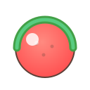

Slice fast — slow hovers don't count
Loading fruits…
Paste each frame into Figma page "Screens — Desktop (1280×720)"
01 Boot
Slice fast — slow hovers don't count
Loading fruits…
01 Boot — Failure variant
Taking longer than usual… check connection
02 Onboarding — Step 1 Camera
Fruit Blade uses your webcam to track hand slices. Your video never leaves the device.
Processed locally in your browser
02 Onboarding — Step 2 Calibration
Hold your hand steady
Tracking ✓ · 72%
02 Onboarding — Step 3 Practice slice

Swipe fast through the fruit to continue
03 Main Menu (merged)
 Classic3 strikes
Classic3 strikes Arcade60 seconds
Arcade60 seconds ZenNo pressure
ZenNo pressure Medium
Medium PLAY
PLAY05 Gameplay HUD
05 Gameplay HUD — Timer urgent
05 Gameplay HUD — Hand lost
06 Pause (HTML)
07 Game Over (HTML)
08 Leaderboard
 Back
Back09 Error — Camera denied
Enable camera in browser settings, or play with your mouse instead.
09 Error — Model loading
Loading hand tracking…
09 Error — Offline
Can't reach the server. Check your connection.
09 Error — Portrait prompt
Landscape works best for slicing. You can continue in portrait with smaller targets.